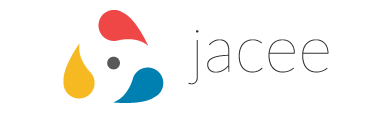
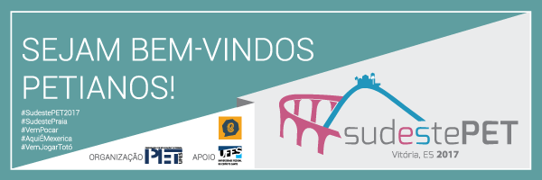

TRABALHOS
2015
|
2016
|
Atualização da identidade da marca para um modelo mais moderno
O site do Topcom foi desenvolvido pela equipe de Web do PET. Fui responsável pela identidade visual e também participei da programação.


O site da Jacee também foi desenvolvido pela equipe de Web do PET. Fui responsável pela estruturação do site baseado em um layout pronto. Trabalhei especialmente nas páginas: minicursos, programação, conferir inscrição e certificados.
|
2017
|

Desenvolvi a arte do outdoor para o evento SudestePET da UFES.
Desenvolvi este projeto para admissão no programa de code reviewer de HTML e CSS da Udacity

|